The CV says what I ship. This page says what fills the rest of the week. Networking events, travel, cats. No filter, no positioning exercise — just what I actually like doing when I close the laptop.
warning: this page is a personality, not a portfolioTech talks, startup fireside chats, women-in-AI breakfasts, IHK and SiBB mixers, the occasional Google Berlin door. The fastest way to learn a city's operating system is to walk into its rooms and see who's there.
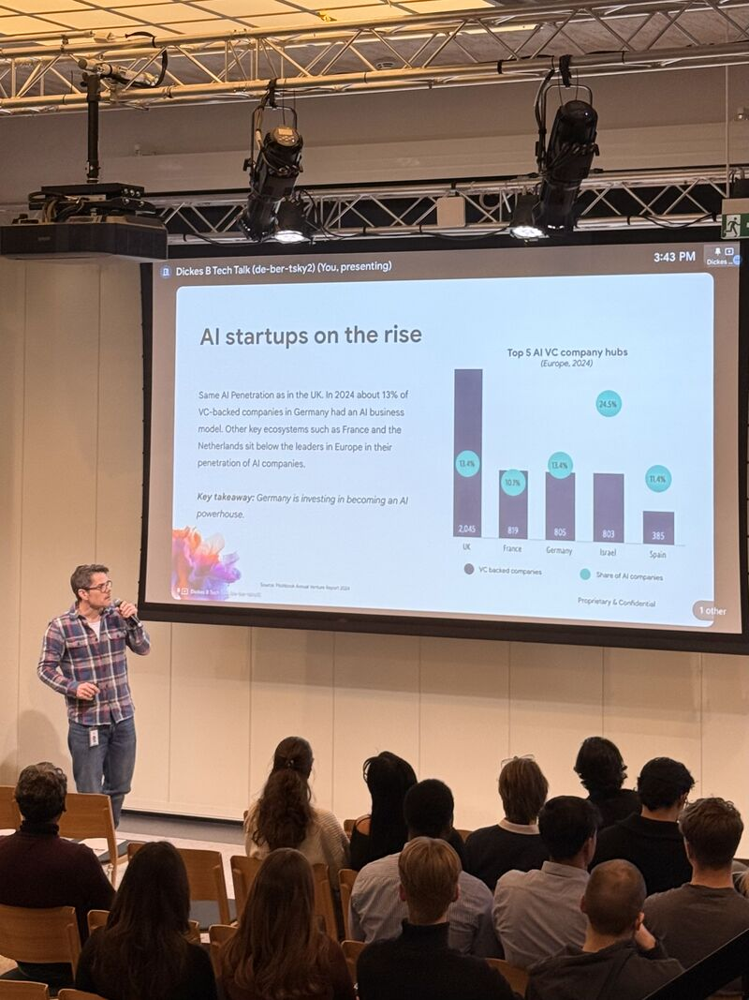
It is already showing up in the numbers.
Axel Täubert (Head of Startups at Google) backed this up with data. AI adoption across European startups is no longer theoretical — the infrastructure, support, and knowledge are already there.
The question is not whether we can build. It is whether we choose to.
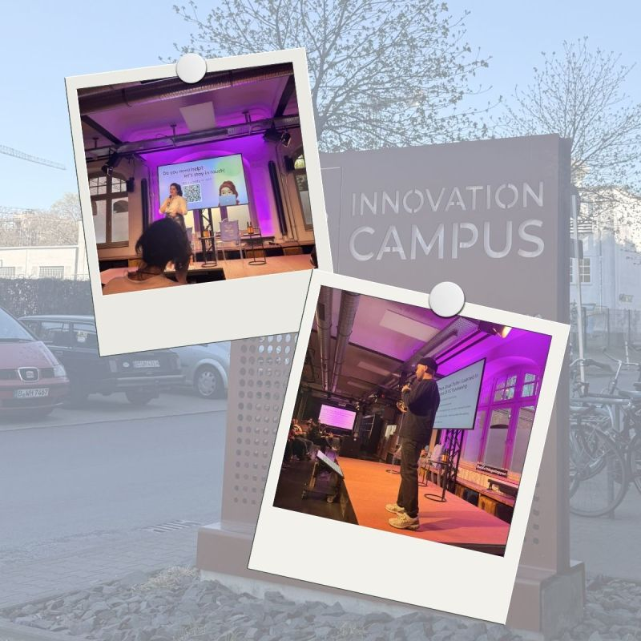
Didn't expect to leave with more questions than answers. Went there with Gökçe Efe Kaplan — and this one stayed with us.
The "Brutal Truth" session by Erdinç Koç was brutal in the best way. Apparently, we needed that.
Randomly ended up talking about public funding with Anaita Azizi. Went in knowing almost nothing, left thinking "okay, I've been sleeping on this."
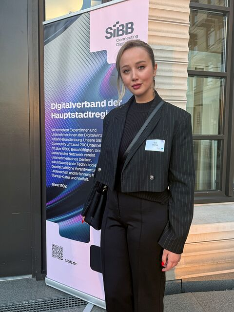
Organized by SiBB (Digitalverband Berlin-Brandenburg) together with Berliner Sparkasse and IBB Ventures. My first VC event in Berlin — a really nice experience.
The goal: bring people with experience together and create space to exchange ideas around fundraising and building startups. Open, helpful, and a step outside my usual way of thinking.
Thanks to Christian Segal, Anne Biedermann, Marian Klee (brighter AI), Clemens Kabel, and Laura Möller. Looking forward to the next one.
P.S. Also nice to have it right next to Brandenburg Gate.
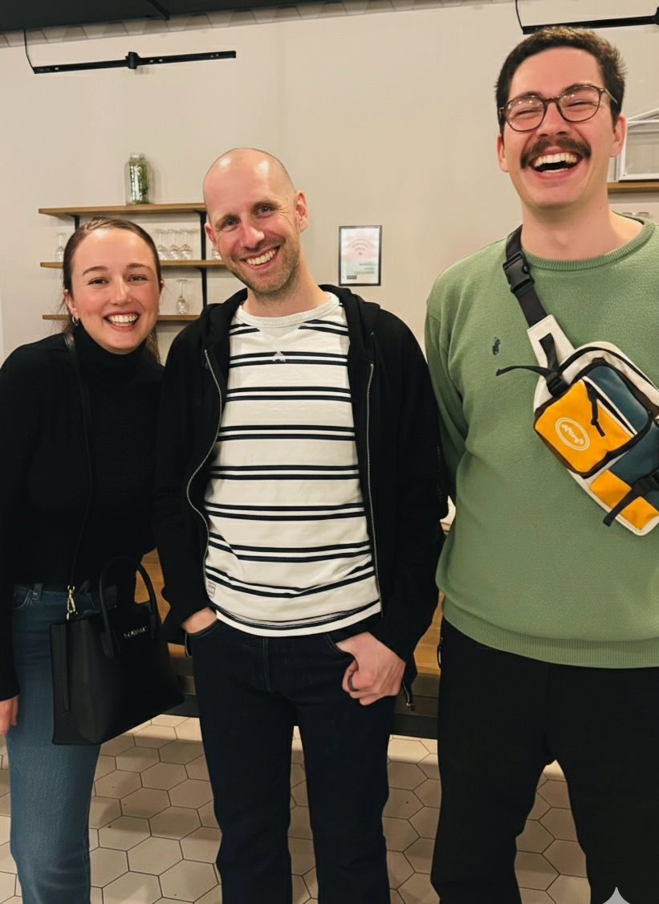
In the middle: Jan Oberhauser, founder of n8n. On the left: Gökçe Efe Kaplan. Random talk, real overlap.
Walking out with new ideas, new people, and things we'll probably act on.
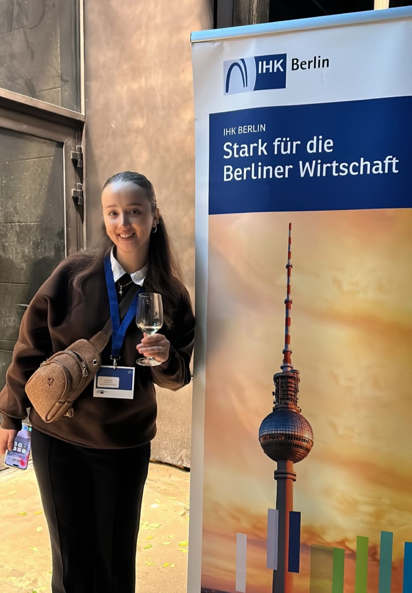
Powerful what happens when different cultures and business minds come together to share stories, ideas, and future visions.
From digitalization to the growing need for qualified professionals (Fachkräfte), the discussions reflected the evolving connection between Turkey and Germany — full of opportunities, innovation, and collaboration.
So grateful to be part of this community building bridges between the two countries. 🇩🇪🇹🇷
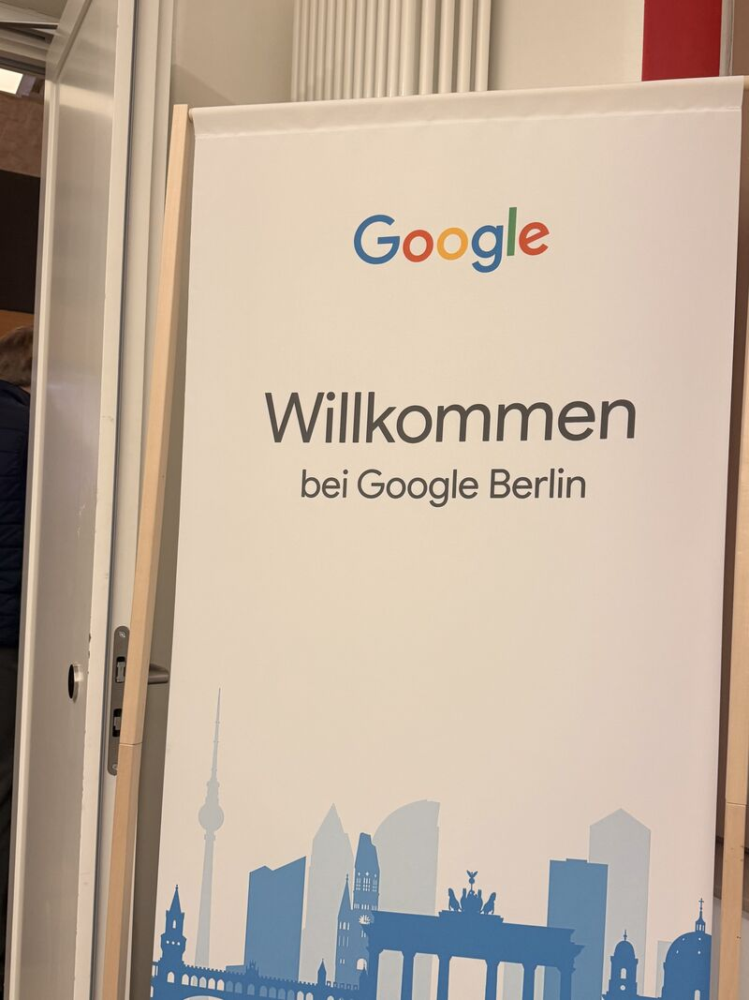
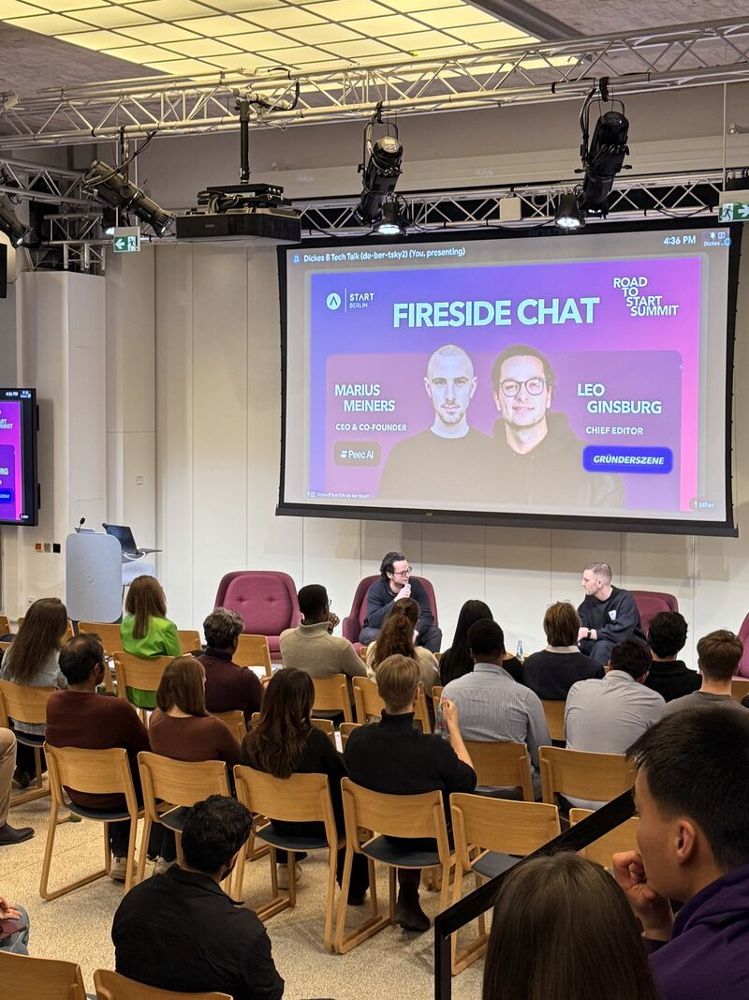
Marius Meiners from Peec AI shared both the product and the story behind it.
A good reminder that ecosystems are not driven by technology alone, but by founders who decide to think bigger than what feels safe.
(Ambition in Germany is still a competitive advantage.)
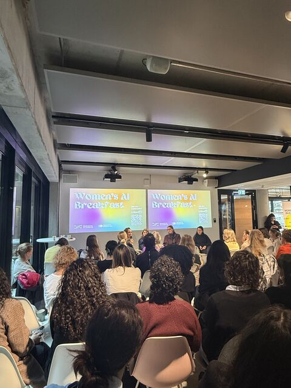
How do you launch and scale when regulation is already embedded in your roadmap?
Spent the morning at the Women's AI Breakfast on High-Risk AI under the EU AI Act. Listened to Franziska Weindauer (TÜV AI.Lab) on the regulatory side, Diana Heinrichs (LINDERA) in healthcare, and Gigi Laan (Tesla) in manufacturing.
One thing got very clear: in high-risk AI, how you build matters as much as what you build. Compliance is not a checkpoint — it is part of the design from day one.
Great moderation by Nicole Büttner, strong community vibe.
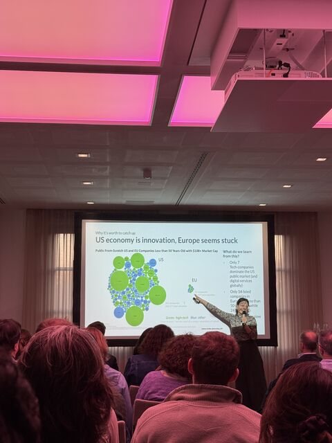
The kind of trips that don't fit on LinkedIn. New cities, old habits, the occasional window seat that earns its keep — and a strong bias for the Mediterranean.
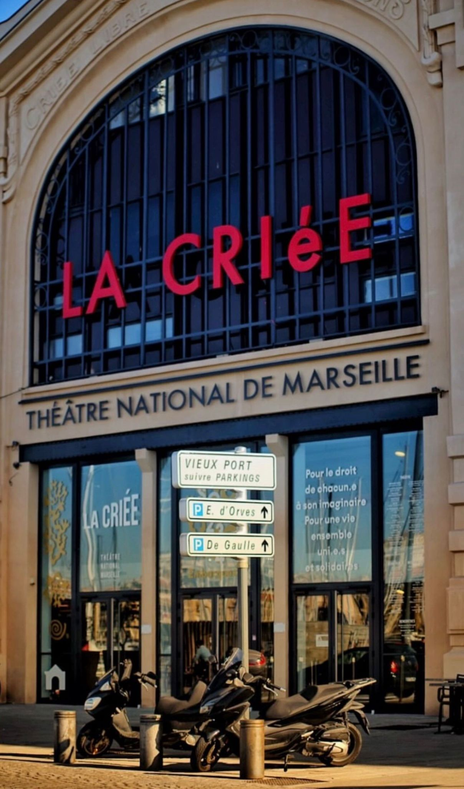
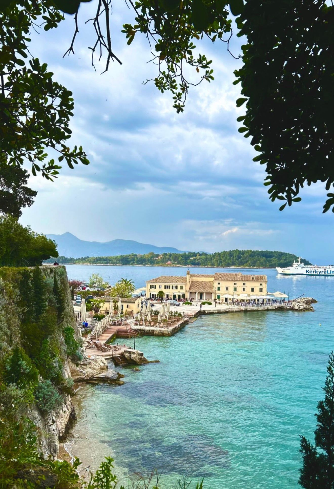
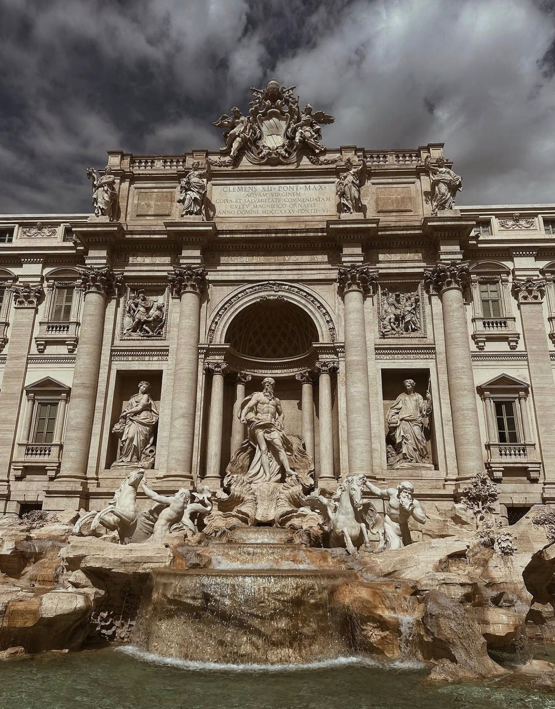
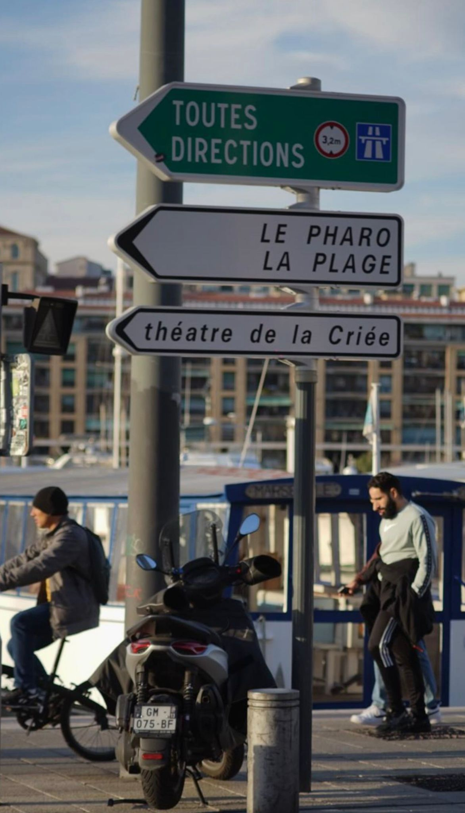
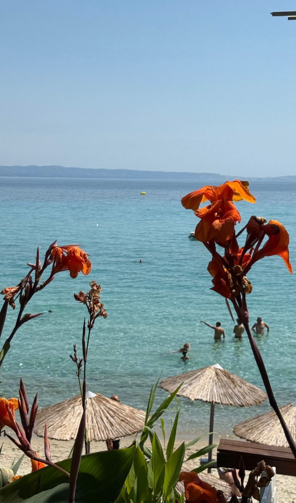
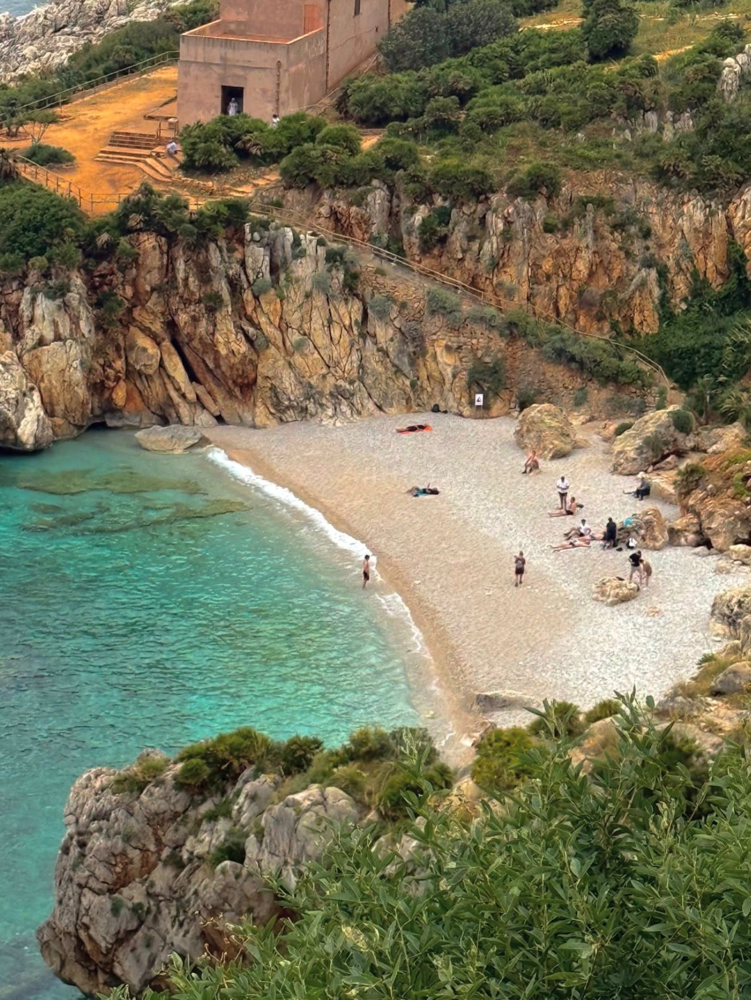
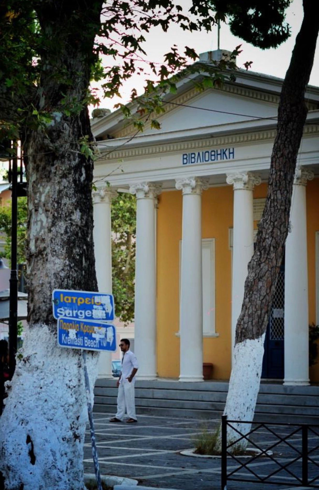
Two managers I never agreed to hire. Excellent at presence, mediocre at slack DMs, world-class at sitting on the keyboard during the wrong calls.
Names, personalities, official portraits, the works. The most important section of this page — stay tuned.